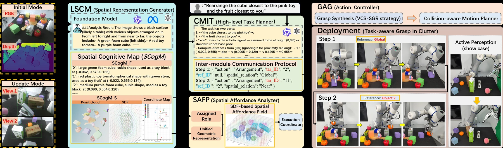
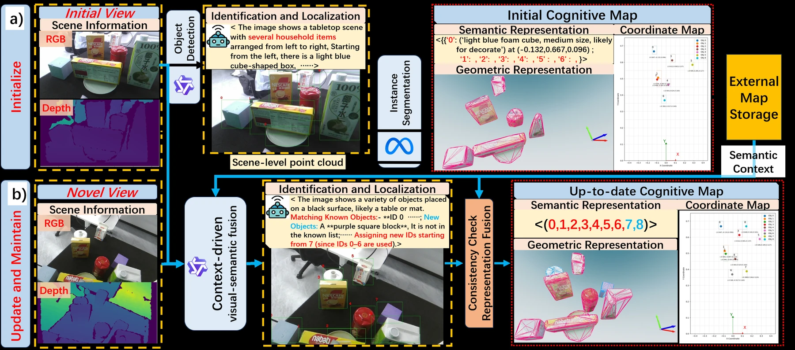
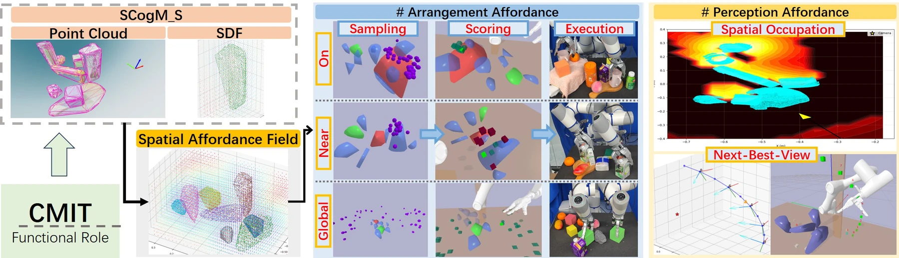
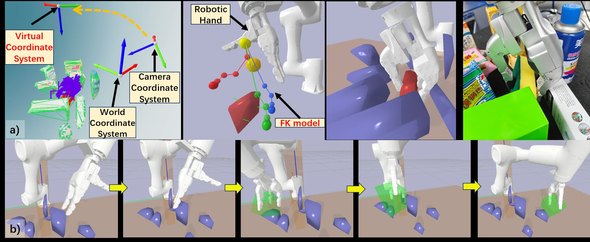
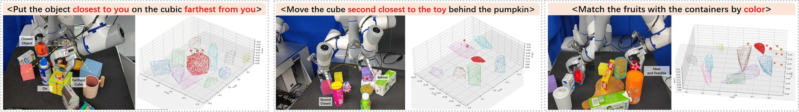
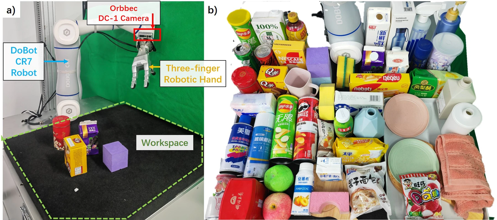

Long-horizon Spatial Cognitive Mapper
Builds and maintains a unified semantic–geometric cognitive map across viewpoints.
A hierarchical cognition–execution framework that unifies scene semantics and 3D geometry in an updatable spatial cognitive map, then derives spatial affordances for active perception, object rearrangement, grasp synthesis, and collision-aware execution.
Framework overview
SPICE builds a persistent spatial cognitive map from RGB-D observations, uses it to ground language-conditioned task planning, constructs SDF-based spatial affordance fields, and finally synthesizes executable grasps and collision-aware trajectories.

Framework overview reproduced from the manuscript. Click to enlarge.
Builds and maintains a unified semantic–geometric cognitive map across viewpoints.
Interprets language instructions, reasons over map coordinates, and selects structured action primitives.
Transforms scene SDFs into task-conditioned scalar fields for rearrangement and active perception.
Generates, ranks, and executes collision-aware grasps and motion plans grounded in the scene representation.
Spatial cognitive map
LSCM combines object-level functional semantics with point-cloud and SDF geometry in a shared world frame. During active perception, visual-semantic context associates objects across viewpoints while geometric consistency checks guard against erroneous point-cloud fusion.

LSCM initialization and cross-view cognitive-map maintenance.
Spatial affordance field

SAFP uses scene-level SDFs to score placement candidates and generate next-best-view trajectories.
For arrangement, SAFP samples candidate placement positions from task-relevant object surfaces, filters them with geometric and directional constraints, and ranks feasible coordinates with semantic, clearance, and support terms. For perception, a spatial information field identifies occluded regions and drives next-best-view sampling.
GAG module
The action generator uses a virtual coordinate system to stabilize grasp generation across viewpoints, performs SDF-based hand–object contact and scene-collision checks, and sends the highest-ranked feasible grasp to an obstacle-aware motion planner.

Grasp synthesis, simulated finger closure, real-world grasping, and obstacle-aware motion planning.
Spatial Reasoning Capability Evaluation
The manuscript evaluates SPICE on spatial-understanding and positional-manipulation tasks, including distance-based relations and directional constraints. Eight video slots are reserved below in the requested 2 × 4 desktop layout.
Zero-shot Grasp Evaluation
The zero-shot evaluation measures semantic-spatial cognition, planning, grasping, and complete task execution under language instructions. Eight video slots are reserved below in the requested 4 × 2 desktop layout.

Successful real-world grasps and corresponding spatial affordance fields from the manuscript.
Hardware
Experiments use a Dobot CR7 arm, a wrist-mounted Orbbec DC1 RGB-D camera, and a three-finger robotic hand in a cluttered tabletop workspace. The evaluation object set contains more than 100 diverse objects, with novel scene layouts constructed for each trial.

Hardware configuration and evaluation object set.